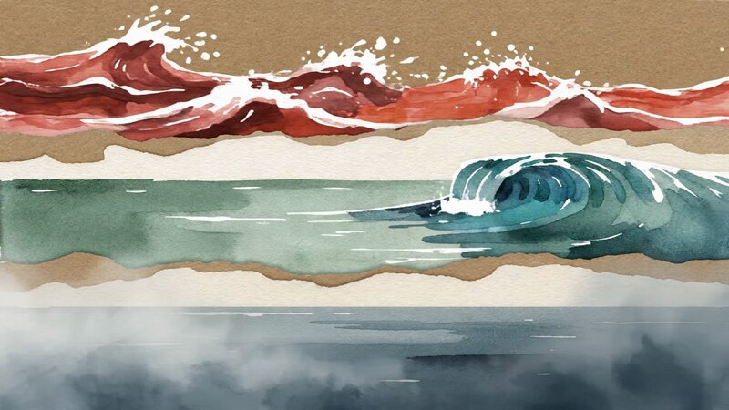
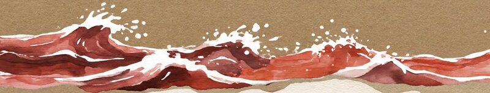

A few ways to take a bearing on where you are, what helps, and what you're giving yourself room for. Step up to whichever fits today — or none at all.

A daily tracker. Drag a small boat along the water to show where you are. Add what you notice in body, thoughts, and behaviour. Keep moments in a quiet log over time.

A small library of small things. When the waters are rough, a list of things to find calm. When the fog has descended, a list to gently bring you back. Pick what you want to try.
What does your day grow from? List what you do, and notice whether it's care for you, care for others, or both. A quiet audit — without judgement, without blame.